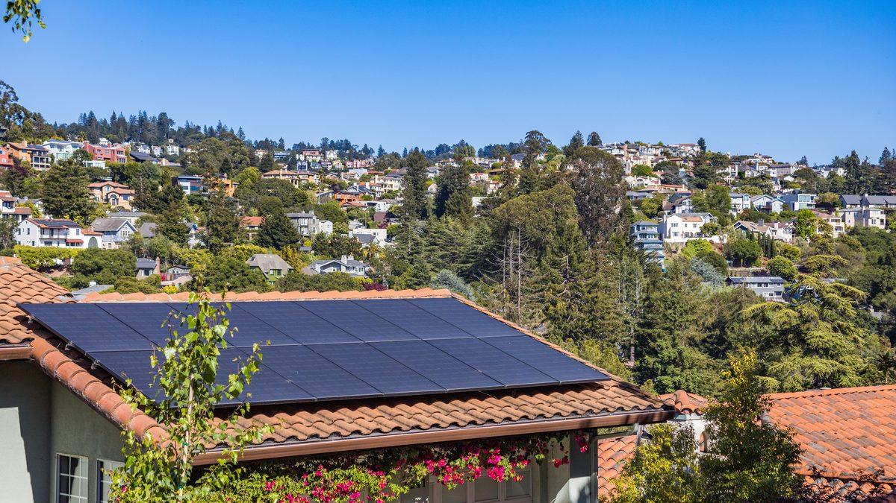

🔧 System at a glance
This is a small grid-tied system suited to a modest home. It uses six modern high-power panels and a 3kW inverter. A battery is optional and shown separately.
| Component | Specification |
|---|---|
| Solar panels | 6 × 500 W Jinko monocrystalline = 3,000 Wp (3.0 kWp) |
| Inverter | 3 kW grid-tied (or 3.6 kW hybrid if adding a battery) |
| Mounting | Roof rails, south-facing, fixed tilt (~45° in this example) |
| Cabling & protection | DC & AC cable, DC isolator, breakers, surge protection, earthing |
| Battery (optional) | ~5 kWh lithium (LiFePO4) for partial backup |
Size your own array with the panel calculator and match the inverter with the inverter calculator.
☀️ Estimated production
Using about 5.5 peak sun hours (a sunny climate) and a realistic performance ratio of ~0.8 for losses (heat, wiring, inverter), a 3.0 kWp array gives roughly:
| Period | Approx. production |
|---|---|
| Per day | ~13 kWh |
| Per month | ~400 kWh |
| Per year | ~4,800 kWh |
Production is higher in summer and lower in winter. Check your own output with the energy production calculator, and find your local sun hours in peak sun hours by location.
💰 Cost breakdown (Jordan, approximate)
Grid-tied, no battery — rough planning figures (prices move, always get local quotes):
| Item | Approx. cost (JD) |
|---|---|
| 6 × 500 W panels | ~500 – 750 |
| 3 kW inverter | ~350 – 600 |
| Mounting, cable, protection | ~300 – 500 |
| Installation & wiring | ~350 – 550 |
| Total (grid-tied) | ~1,500 – 2,400 |
| Optional 5 kWh battery | + ~700 – 1,400 |
📈 Savings & payback
In the real example above, a home paying about 100 JD a month had its bill reduced to essentially 0 JD after installing this size of system. More generally, offsetting around 400 kWh a month saves roughly 50–100 JD per month depending on your tariff block, so a ~1,700–2,000 JD grid-tied system typically pays back in about 2–4 years — after which the power is essentially free for the panels' 25+ year life.
Run your own numbers with the ROI calculator and the bill savings calculator, or design the whole system at once in the system report builder.
🛠️ Field note
From my experience with small solar systems in Jordan: one home had a monthly electricity bill of around 100 JD. We installed a 3kW system — 6 × 500 W Jinko panels mounted at a fixed 45° tilt — and it covered the entire bill. The home went from about 100 JD a month to effectively 0 JD.
🧰 Design your own system
- Solar panel calculator — how many panels for your usage.
- Inverter calculator — match the inverter to the array.
- Battery calculator — size backup storage.
- ROI calculator — payback in your currency.
- Full system report — design the whole system in one page.
Comparing sizes? See the guides on how many panels to run a house and grid-tied vs off-grid vs hybrid. For your country's tariffs and payback, visit Solar by Country.
❓ Frequently asked questions
How many panels are in a 3kW solar system?
Usually 6 panels of ~500-550W, or 8 of ~375-400W. This example uses 6 × 550W for about 3.3 kWp.
How much power does a 3kW solar system produce per day?
Around 13 kWh/day at ~5.5 peak sun hours for a 3.0 kWp array, so about 400 kWh/month and ~4,800 kWh/year.
How much does a 3kW solar system cost?
Roughly 1,500-2,400 JD grid-tied in Jordan, more with a battery. Get local quotes.
Is a 3kW solar system worth it?
For a small-to-medium home, yes — with net metering it can pay back in roughly 3-6 years and then produce for 25+ years.
Note: all figures are approximate and for planning only. Production depends on your sun hours, shading and roof orientation; prices and tariffs vary and change over time. Always confirm with local installers and your electricity provider.